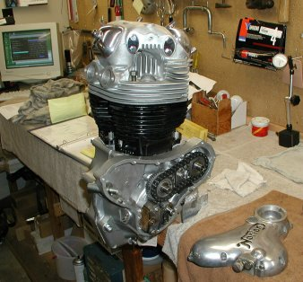
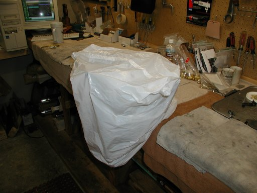

Old Britts Check Lists
By: Fred Eaton
Last updated 02/12/04
These are the check lists that I have developed over time and thought they may come in handy.
I follow a check list when building engines to make sure I do not forget something that could
cause a problem or make me take something back apart when I realize that I did forget something.
If you do not have the luxury of spending uninterrupted hours on a project, like I do, you may find these check lists very helpful.
They let you know where you left off and keep you from skipping a step.
I took a front engine mount, welded it to a base and bolted it to my work bench. This makes working on an engine cnnveient and comfortable.
You can build a temporary mount out of wood or hold your engine between soft aluminum plates in your vise.

I always keep my work area as clean as possible and
when a project is interuped or even stopped for a couple of hours, I always protect the work that I have completed by completely
covering the engine with a plastic bag as shown in the next picture.

I have more lists and will add them and update them as time goes on.
Engine Lists
- Lower End, Crank Case, list A, This check list pertains to rebuilding of the lower
end of a Commando motor consisting of the crank cases, cam, and crank. (added or updated 02/20/04).
- Lower End, Timing Side, list B, This check list pertains to reassembling the cam chain,
timing the cam, installing the oil pump, etc. (added or updated 02/20/04).
Return to Old Britts home page
….. Technical Articles
This page was written and designed by F. H. Eaton
& Associates if you have any questions or comments please
contact us at infon@fheaton.com